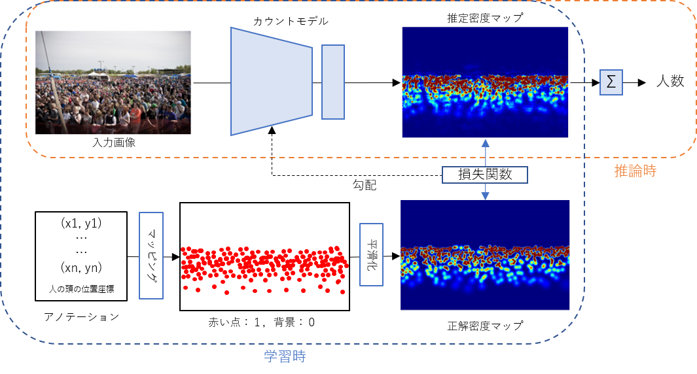

スケール変動に頑健な群衆カウントモデルの設計
概要
１枚の画像からその画像に写る人数のカウントを行うモデル（Fully Convolutional Network）の設計と、認識精度向上の為の構造改良を行っています。画像には手前の人間はおおきく写り、奥の人間は小さく写るように、スケールの連続的な変動があります。スケール変動が認識の弊害となるため、その問題に対処できるモデルの工夫を目的としています。
背景
ショッピングモールやイベントなどの場面で超大人数を一瞬で自動的にカウントする事でマーケティングへ応用や、感染症対策として人数が集まる場面を検知して感染予防へ貢献が考えられます。

参考文献
- H. Idrees, M. Tayyab, K. Athrey, D. Zhang, S. Al-Maddeed, N. Rajpoot, M. Shah, Composition Loss for Counting, Density Map Estimation and Localization in Dense Crowds, in Proceedings of IEEE European Conference on Computer Vision (ECCV 2018), Munich, Germany, September 8-14, 2018.